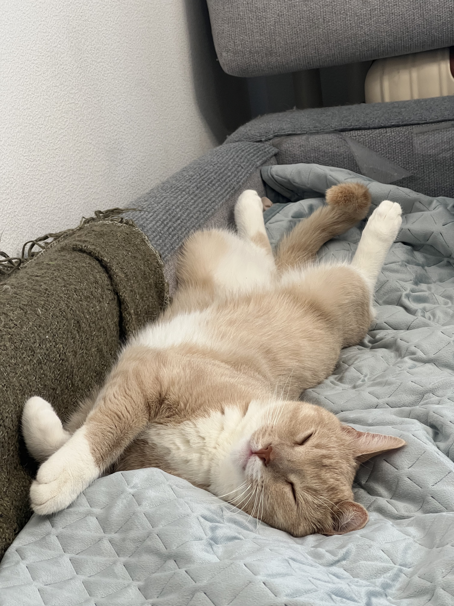

Фритрек и нулевой спринт: Подготовка к работе

Это было самое начало пути. На этом этапе важно было проникнуться основами и настроиться на учёбу. И, возможно, подумать, как новые знания могут повлиять на ваше будущее.
Попробую передать свои эмоции от обучения через моего кота.
В самом начале я абсолютно не понимала во что ввязалась и сколько времени мне потребуется на учебу.